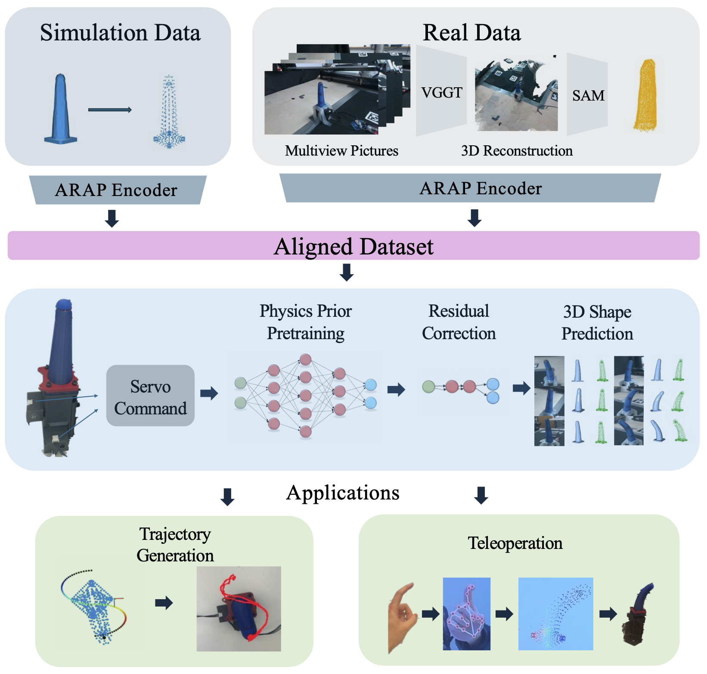
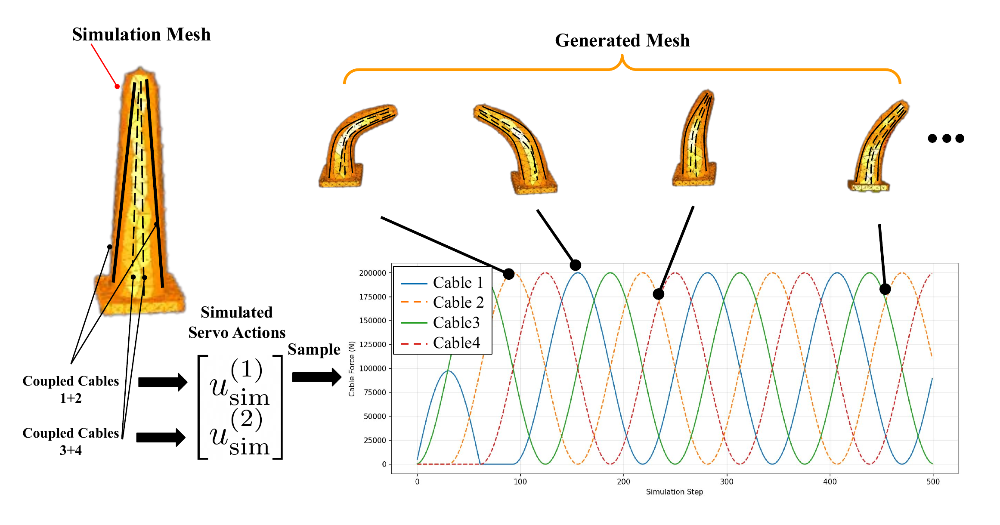

Method
SOFTMAP combines ARAP-based alignment, simulation pretraining, residual correction, and actuation calibration into a unified pipeline for accurate sim-to-real forward modeling.

SOFTMAP pipeline. Simulation data and real multi-view images are independently processed into 3D representations, then encoded via ARAP into a shared topologically consistent vertex space. A learned MLP maps servo commands to 3D shape predictions, refined by a residual correction network for downstream trajectory generation and teleoperation.

Simulation. The soft finger is modeled in SOFA Framework using a Neo-Hookean hyperelastic material with four embedded tendons.

Real-world data collection. Two RGB cameras capture synchronized multi-view images of the soft finger for 3D reconstruction.